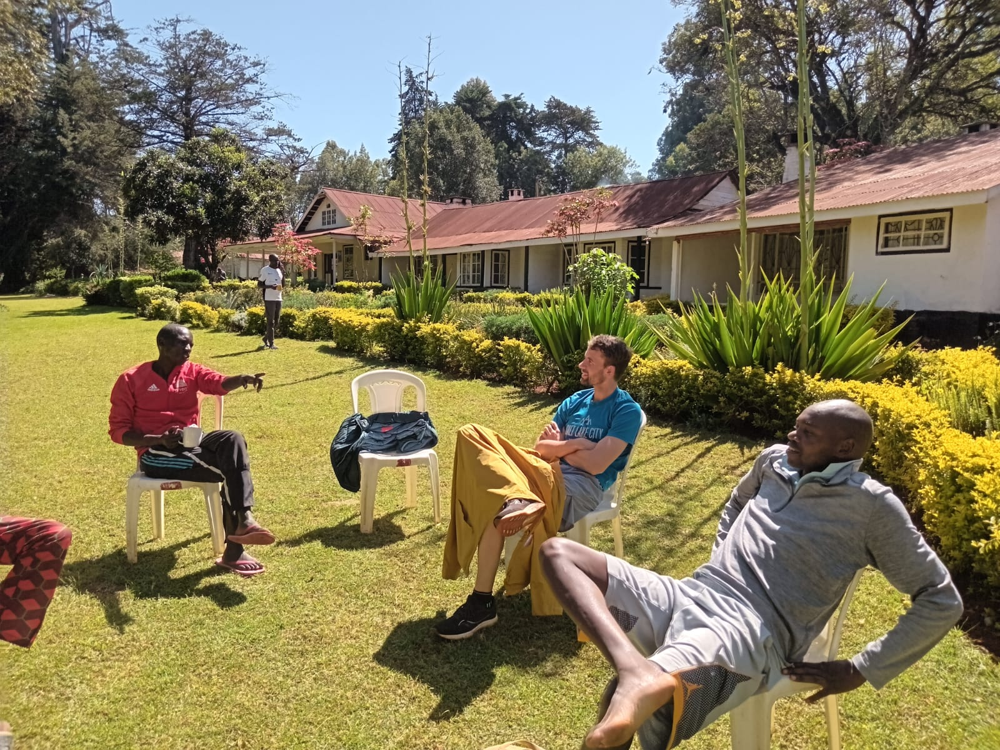
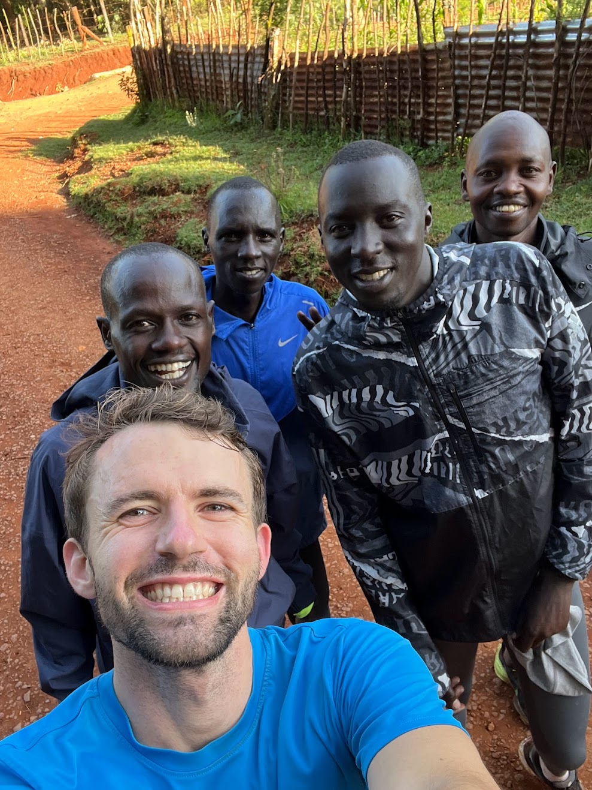
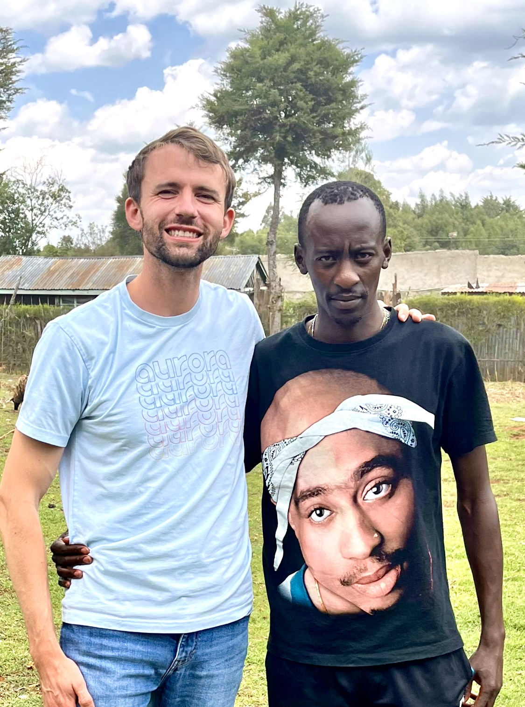

Kenya Trip - August 2023
If you're here, you're probably from Y Combinator interested in seeing a few pics from my improvised tour of the Kenyan running village of Kaptagat. Enjoy!

This is the hostel I found where the other runners train. Truly beautiful location, but since the structure was quite old it was only $10/night. Between workout sessions the runners love to just sit and talk and asked me a million questions about America, including politics, Bitcoin, population trends.
 Running with them was so fun! They didn't even break a sweat with me :) From left to right: Mark Kiptoo, Benson Kiplimo, Kipkemei Mutai, Micah Kogo. These guys are faster than every American distance runner, but in Africa they are middle-of-the-pack pros.
 Eliud Kipchoge has held the marathon world record for the last decade and was the first human to run faster than 2hrs. He was a bit shy, but very kind and wrote me a sweet note. He has been an inspiration for a long time and meeting him was the goal of my trip.
Eliud Kipchoge has held the marathon world record for the last decade and was the first human to run faster than 2hrs. He was a bit shy, but very kind and wrote me a sweet note. He has been an inspiration for a long time and meeting him was the goal of my trip.
